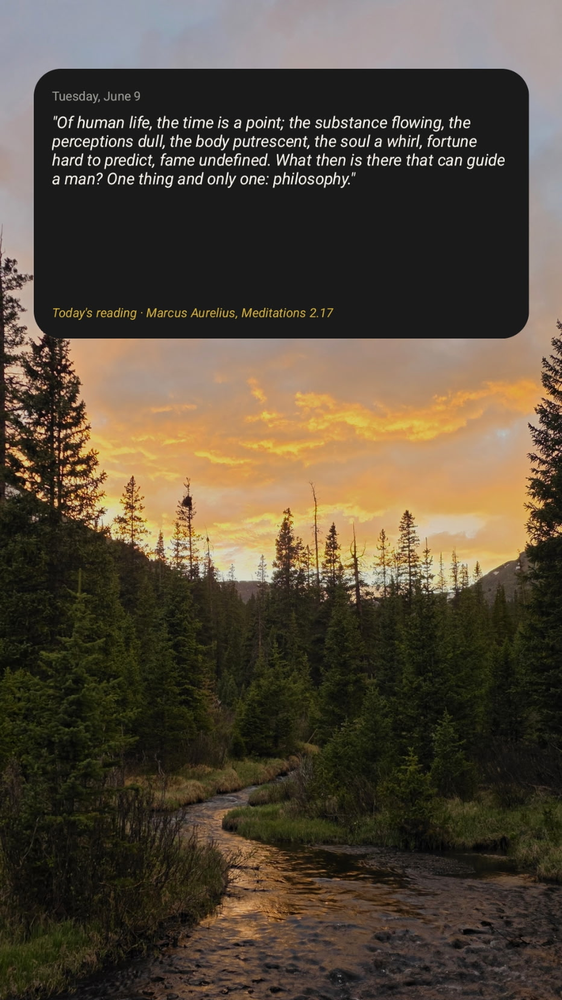
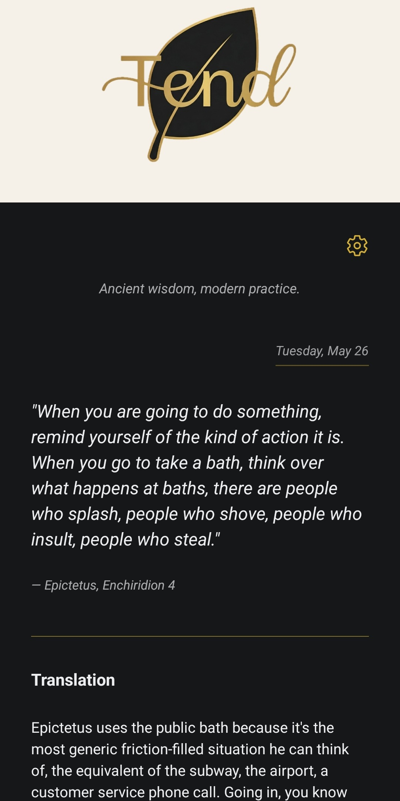
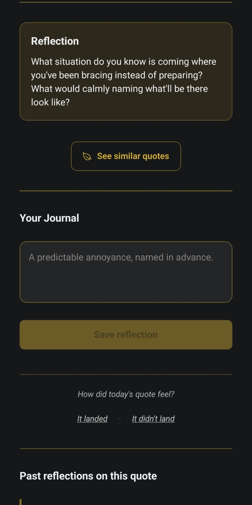
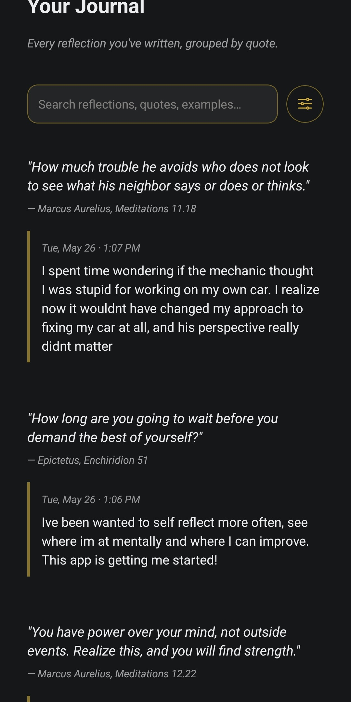
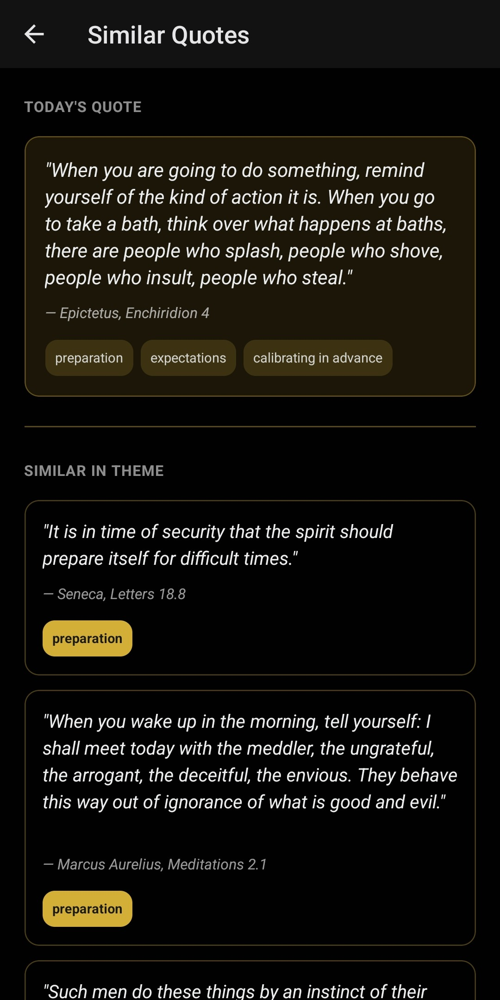
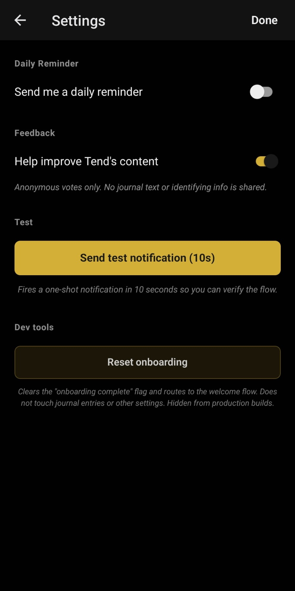

Ancient wisdom, modern practice.
"You have power over your mind, not outside events. Realize this, and you will find strength."
Marcus Aurelius, Meditations 12.22
Tend is a small Android app for daily Stoic practice. Each day, one quote from Marcus Aurelius, Seneca, or Epictetus, translated into plain modern English, with a real-world example and a question to sit with.
No streaks. No badges. No audience. A quiet place to read a hard-won idea and write a short reflection of your own. Your journal stays on your phone, nothing leaves your device, and no account is required.






Free. Android only for now. iOS planned.
Hi. I'd loved the Stoics for years but kept finding them easier to admire than to internalize. Tend is the bridge I built for myself: a quote a day, a plain translation, an example that fits. I hope it helps yours too.
❦ Kevin